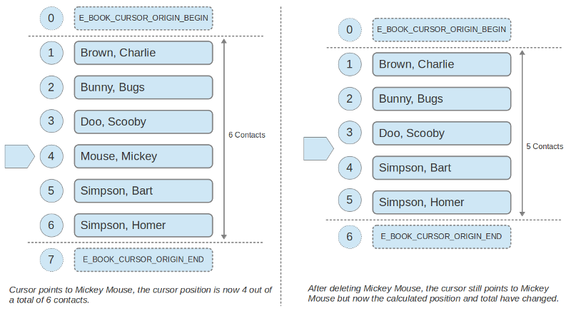
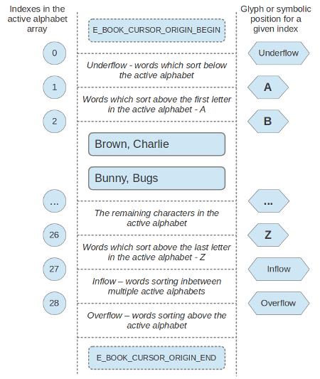

| Top |
| GStrv | alphabet | Read |
| EBookClient * | client | Read / Write / Construct Only |
| GDBusConnection * | connection | Write / Construct Only |
| GMainContext * | context | Write / Construct Only |
| EDataBookCursor * | direct-cursor | Write / Construct Only |
| gchar * | object-path | Write / Construct Only |
| gint | position | Read |
| GStrv | sort-fields | Write / Construct Only |
| gint | total | Read |
The EBookClientCursor is an iteration based interface for browsing a sorted list of contacts in the addressbook.
Aside from the documentation found here, a fully functional example progrem can be found here.
When creating the cursor initially with e_book_client_get_cursor(),
a list of EContactFields must be provided to define the sort order for
the newly created cursor. Only contact fields of type G_TYPE_STRING
can potentially be used to define a cursor's sort order.
Backends which support cursors may refuse to create a cursor based
on the fields specified as sort keys, if this happens then an
E_CLIENT_ERROR_INVALID_QUERY error will be reported by
e_book_client_get_cursor().
The default SQLite backend provided with Evolution Data Server
only supports EContactFields that are specified as summary information
to be used as sort keys. Whether a contact field is configured to
be part of the summary for your addressbook can be verified with
e_source_backend_summary_setup_get_summary_fields().
The order of sort keys given to e_book_client_get_cursor() defines
which sort key will be the primary sort key and which keys will
serve as tie breakers where the previous sort keys are exact matches.
In the following example we create a typical cursor sorted with
E_CONTACT_FAMILY_NAME as the primary sort key and E_CONTACT_GIVEN_NAME
as a tie breaker.
1 2 3 4 5 6 7 8 9 10 11 12 13 14 15 |
EBookClientCursor *cursor = NULL; EContactField sort_fields[] = { E_CONTACT_FAMILY_NAME, E_CONTACT_GIVEN_NAME }; EBookCursorSortType sort_types[] = { E_BOOK_CURSOR_SORT_ASCENDING, E_BOOK_CURSOR_SORT_ASCENDING }; GError *error = NULL; if (e_book_client_get_cursor_sync (book_client, // EBookClient NULL, // Search Expression sort_fields, // Sort Keys sort_types, // Ascending / Descending 2, // Number of keys &cursor, // Return location for cursor NULL, // GCancellable &error)) { // Now we have a cursor ... } |
Sort order is immutable, if you need to browse content in a different order, then you need to create a separate cursor.
At any given time in a cursor's life cycle, a cursor's internal state will refer to a relative position in a sorted list.
There are three basic varieties of cursor states:
Virtual states referring to the beginnng and end of the list.
The beginning state is positioned before any contact in the addressbook.
When the cursor is in this state, a call to e_book_client_cursor_step()
will always start reporting contacts from the beginning of the list.
Similarly when in the end state, stepping in reverse will start
reporting contacts from the end of the list.
The beginning and end states can be reached by stepping off the
end of the list, or by specifying the E_BOOK_CURSOR_ORIGIN_BEGIN or
E_BOOK_CURSOR_ORIGIN_END origins to e_book_client_cursor_step(). The
cursor is also initially positioned before the contact list.
States referring to a specific contact.
A state which refers to a specific contact in the list of
contacts associated with a given cursor. At the end of any
successful call to e_book_client_cursor_step() with
the E_BOOK_CURSOR_STEP_MOVE flag specified; the cursor
state is updated with the value of the last result.
States referring to an alphabetic position.
When a state refers to an Alphabetic Index, it refers to a position which is in between contacts. For instance the alphabetic position "E" refers to a position after contacts starting with "D" and before contacts starting with "E".
The “position” and “total” attributes provide feedback about a cursor's position in relation to the addressbook provided the cursor's sort order.
The total reflects that total amount of contacts in the addressbook given the cursor's Search Expression. The position is defined as the number of contacts leading up to the cursor position inclusive of the cursor position.
To help illustrate how the total and position attributes relate to a sorted list of contacts, we've provided the diagram below.

The above diagram shows two representations of a sorted contact list, using
E_CONTACT_FAMILY_NAME as the primary sort key and E_CONTACT_GIVEN_NAME as
a secondary sort key. On either side we can see the symbolic positions
E_BOOK_CURSOR_ORIGIN_BEGIN and E_BOOK_CURSOR_ORIGIN_END.
For a given cursor state, the position value will be equal to the total
number of contacts leading up to the current cursor state inclusive of the
cursor state itself. In the left hand side of the above diagram the cursor
points to the fourth contact and the cursor position is also 4. An exception
to this is when the cursor state refers to the E_BOOK_CURSOR_ORIGIN_END position.
When the cursor state refers to the end of list, the position property
will have a value of (total + 1).
Another thing the above diagram illustrates is the effect that an asynchronous addressbook modification has on the cursor. The right hand side of the diagram portrays the result of deleting "Mickey Mouse" from the original list on the left.
The cursor state at this time still litteraly refers to "Mickey Mouse", however the number of contacts leading up to "Mickey Mouse" is now 3 instead of 4. As one might have guessed, any addition of a contact which is considered to be less than or equal to "Mickey Mouse" at this point, will cause the position to increase again. In this way, asynchronous addressbook modification might cause the cursor's position and total values to change, but never effect the cursor's state and it's actual position in relation to other contacts in the sorted list.
The position and total can be useful for various tasks such as determining "Forward" / "Back" button sensitivity in a browser interface, or displaying some indication of the view window's position in the full contact list.
1 2 3 4 5 6 7 8 9 10 11 12 13 14 15 16 17 18 |
gint position, total; gdouble percent; // Fetch the position & total position = e_book_client_cursor_get_position (cursor); total = e_book_client_cursor_get_total (cursor); // The position can be total + 1 if we're at the end of the // list, let's ignore that for this calculation. position = CLAMP (position, 0, total); // Calculate the percentage. percent = position * 1.0F / (total - N_DISPLAY_CONTACTS); // Let the user know the percentage of contacts in the list // which are positioned before the view position (the // percentage of the addressbook which the user has seen so far). update_percentage_of_list_browsed (user_interface, percent); |
These total and position values are guaranteed to always be coherent, they are updated synchronously upon successful completion of any of the asynchronous cursor API calls, and also updated asynchronously whenever the addressbook changes and a “refresh” signal is delivered.
Change notifications are guaranteed to only ever be delivered in the GMainContext which was the thread default main context at cursor creation time.
The list of contacts associated to a given cursor can be filtered
with a search expression generated by e_book_query_to_string(). Since
this effects how the data will be traversed in the backend, seach
expressions come with the same limitation as sort keys. Backends
will report E_CLIENT_ERROR_INVALID_QUERY for contact fields which
are not supported. For the default local addressbook, any fields
which are configured in the summary can be used to filter cursor
results.
Changing the search expression can be done at any time using
e_book_client_cursor_set_sexp().
The cursor position and total
values will be updated synchronously after successfully setting the
search expression at which time you might refresh the current
view, displaying the new filtered list of contacts at the same
cursor position.
The cursor API allows you to iterate through a sorted list of contacts without keeping a potentially large collection of contacts loaded in memory.
Iterating through the contact list is done with e_book_client_cursor_step(), this
function allows one to move the cursor and fetch the results following the current
cursor position.
1 2 3 4 5 6 7 8 9 10 11 12 13 14 15 16 17 18 19 20 21 22 23 24 25 26 27 28 29 30 31 32 33 34 35 36 37 38 39 40 41 42 43 44 45 46 47 48 49 50 51 |
GError *error = NULL; GSList *results = NULL; gint n_results; // Move the cursor forward by 10 contacts and fetch the results. n_results = e_book_client_cursor_step_sync (cursor, E_BOOK_CURSOR_STEP_MOVE | E_BOOK_CURSOR_STEP_FETCH, E_BOOK_CURSOR_ORIGIN_CURRENT, 10, &results, NULL, &error); if (n_results < 0) { if (g_error_matches (error, E_CLIENT_ERROR, E_CLIENT_ERROR_OUT_OF_SYNC)) { // The addressbook has been modified at the same time as // we asked to step. The appropriate thing to do is wait // for the "refresh" signal before trying again. handle_out_of_sync_condition (cursor); } else if (g_error_matches (error, E_CLIENT_ERROR, E_CLIENT_ERROR_QUERY_REFUSED)) { // We asked for 10 contacts but were already positioned // at the end of the list (or we asked for -10 contacts // and were positioned at the beginning). handle_end_of_list_condition (cursor); } else { // Some error actually occurred handle_error_condition (cursor, error); } g_clear_error (&error); } else if (n_results < 10) { // Cursor did not traverse as many contacts as requested. // // This is not an error but rather an indication that // the end of the list was reached. The next attempt to // move the cursor in the same direction will result in // an E_CLIENT_ERROR_QUERY_REFUSED error. } |
In the above example we chose E_BOOK_CURSOR_ORIGIN_CURRENT as our EBookCursorOrigin so the above
call will traverse 10 contacts following the cursor's current position. One can also choose the
E_BOOK_CURSOR_ORIGIN_BEGIN or E_BOOK_CURSOR_ORIGIN_END origin to start at the beginning or end
of the results at any time.
We also specified both of the flags E_BOOK_CURSOR_STEP_MOVE and E_BOOK_CURSOR_STEP_FETCH,
this means we want to receive results from the addressbook and we also want to modify
the current cursor state (move the cursor), these operations can however be done
completely independantly of eachother, which is often what is desired for a contact
browsing user interface. It is however recommended to move and fetch
results in a single pass wherever that makes sense in your application.
Because the addressbook might be modified at any time by another application,
it's important to handle the E_CLIENT_ERROR_OUT_OF_SYNC error. This error will occur
at any time that the cursor detects an addressbook change while trying to step.
Whenever an out of sync condition arises, the cursor should be left alone until the
next “refresh” signal. The “refresh” signal is triggered
any time that the addressbook changes and is the right place to refresh the currently
loaded content, it is also guaranteed to be triggered after any E_CLIENT_ERROR_OUT_OF_SYNC
error.
The diagram below illustrates some scenarios of how the cursor state is updated
in calls to e_book_client_cursor_step().
The cursor permits navigation of the sorted contact list in terms of alphabetic positions in the list, allowing one to jump from one letter to the next in the active alphabet.
The active alphabet itself is represented as an array of UTF-8 strings which are
suitable to display a given glyph or alphabetic position in the user's active alphabet.
This array of alphabetic position labels is exposed via the “alphabet”
property and can always be fetched with e_book_client_cursor_get_alphabet().
As shown below, each index in the active alphabet array is a potential cursor state which refers to a position before, after or in between contacts in the sorted contact list. Most of the positions in the active alphabet array refer to alphabetic glyhps or positions, however the the 'underflow', 'inflow' and 'overflow' positions represent positions for contacts which sort outside the bounderies of the active alphabet.
The active alphabet is dynamically resolved from the system locale at startup time and whenever a system locale change notification is delivered to Evolution Data Server. If ever the system locale changes at runtime then a change notification will be delivered for the “alphabet” property, this is a good time to refresh the list of alphabetic positions available in a user interface.
Using the active alphabet, one can build a user interface which allows the user
to navigate to a specific letter in the results. To set the cursor's position
directly before any results starting with a specific letter, one can use
e_book_client_cursor_set_alphabetic_index().
1 2 3 4 5 6 7 8 9 10 11 12 13 14 15 16 17 18 19 20 21 22 23 24 25 26 27 |
GError *error = NULL; gint index = currently_selected_index (user_interface); // At this point 'index' must be a numeric value corresponding // to one of the positions in the array returned by // e_book_client_cursor_get_alphabet(). if (!e_book_client_cursor_set_alphabetic_index_sync (cursor, index, NULL, &error)) { if (g_error_matches (error, E_CLIENT_ERROR, E_CLIENT_ERROR_OUT_OF_SYNC)) { // The system locale has changed at the same time // as we were setting an alphabetic cursor position. handle_out_of_sync_condition (cursor); } else { // Some error actually occurred handle_error_condition (cursor, error); } g_clear_error (&error); } |
After setting the alphabetic index successfully, you can go ahead
and use e_book_client_cursor_step() to load some contacts at the
beginning of the given letter.
This API can result in an E_CLIENT_ERROR_OUT_OF_SYNC error. This error will
occur at any time that the cursor tries to set the alphabetic index whilst the
addressbook is changing its active locale setting. In the case of a dynamic locale
change, a change notification will be delivered for the “alphabet”
property at which point the application should reload anything related to the
alphabet (a “refresh” signal will also be delivered at this point).
While moving through the cursor results using e_book_client_cursor_step(),
it can be useful to know which alphabetic position a given contact sorts
under. This can be useful if your user interface displays an alphabetic
label indicating where the first contact in your view is positioned in
the alphabet.
One can determine the appropriate index for a given EContact by calling
e_book_client_cursor_get_contact_alphabetic_index() after refreshing
the currently displayed contacts in a view.
1 2 3 4 5 6 7 8 9 10 11 12 13 14 15 16 |
EContact *contact; const gchar * const *alphabet; gint index; // Fetch the first displayed EContact in the view contact = first_contact_in_the_list (user_interface); // Calculate the position in the alphabet for this contact index = e_book_client_cursor_get_contact_alphabetic_index (cursor, contact); // Fetch the alphabet labels alphabet = e_book_client_cursor_get_alphabet (cursor, &n_labels, NULL, NULL, NULL); // Update label in user interface set_alphabetic_position_feedback_text (user_interface, alphabet[index]); |
struct _EBookClient *
e_book_client_cursor_ref_client (EBookClientCursor *cursor);
Returns the “client” associated with cursor
.
The returned EBookClient is referenced because the cursor does not keep a strong reference to the client.
Unreference the EBookClient with g_object_unref() when finished with it.
Since: 3.12
gint
e_book_client_cursor_get_total (EBookClientCursor *cursor);
Fetches the total number of contacts in the addressbook
which match cursor
's query
Since: 3.12
gint
e_book_client_cursor_get_position (EBookClientCursor *cursor);
Fetches the number of contacts leading up to the current cursor position, inclusive of the current cursor position.
The position value can be anywhere from 0 to the total
number of contacts plus one. A value of 0 indicates
that the cursor is positioned before the contact list in
the symbolic E_BOOK_CURSOR_ORIGIN_BEGIN state. If
the position is greater than the total, as returned by
e_book_client_cursor_get_total(), then the cursor is positioned
after the last contact in the symbolic E_BOOK_CURSOR_ORIGIN_END position.
Since: 3.12
void e_book_client_cursor_set_sexp (EBookClientCursor *cursor,const gchar *sexp,GCancellable *cancellable,GAsyncReadyCallback callback,gpointer user_data);
Sets the Search Expression for the cursor.
See: e_book_client_cursor_set_sexp_sync().
This asynchronous call is completed with a call to
e_book_client_cursor_set_sexp_finish() from the specified callback
.
cursor |
||
sexp |
the new search expression for |
|
cancellable |
a GCancellable to optionally cancel this operation while in progress. |
[allow-none] |
callback |
callback to call when a result is ready |
|
user_data |
user data for the |
Since: 3.12
gboolean e_book_client_cursor_set_sexp_finish (EBookClientCursor *cursor,GAsyncResult *result,GError **error);
Completes an asynchronous call initiated by e_book_client_cursor_set_sexp(), reporting
whether the new search expression was accepted.
Since: 3.12
gboolean e_book_client_cursor_set_sexp_sync (EBookClientCursor *cursor,const gchar *sexp,GCancellable *cancellable,GError **error);
Sets the Search Expression for the cursor.
A side effect of setting the search expression is that the
position and totalproperties will be updated.
If this method is called from the same thread context in which the cursor was created, then the updates to the “position” and “total” properties are guaranteed to be delivered synchronously upon successful completion of setting the search expression. Otherwise, notifications will be delivered asynchronously in the cursor's original thread context.
If the backend does not support the given search expression,
an E_CLIENT_ERROR_INVALID_QUERY error will be set.
cursor |
||
sexp |
the new search expression for |
|
cancellable |
a GCancellable to optionally cancel this operation while in progress. |
[allow-none] |
error |
[out][allow-none] |
Since: 3.12
void e_book_client_cursor_step (Steps the cursor through the results byEBookClientCursor *cursor,EBookCursorStepFlags flags,EBookCursorOrigin origin,gint count,GCancellable *cancellable,GAsyncReadyCallback callback,gpointer user_data);
a maximum of count
and fetch the results traversed.
See: e_book_client_cursor_step_sync().
This asynchronous call is completed with a call to
e_book_client_cursor_step_finish() from the specified callback
.
cursor |
||
flags |
The EBookCursorStepFlags for this step |
|
origin |
The EBookCursorOrigin from whence to step |
|
count |
a positive or negative amount of contacts to try and fetch |
|
cancellable |
a GCancellable to optionally cancel this operation while in progress. |
[allow-none] |
callback |
callback to call when a result is ready |
|
user_data |
user data for the |
Since: 3.12
gint e_book_client_cursor_step_finish (EBookClientCursor *cursor,GAsyncResult *result,GSList **out_contacts,GError **error);
Completes an asynchronous call initiated by e_book_client_cursor_step(), fetching
any contacts which might have been returned by the call.
cursor |
||
result |
||
out_contacts |
return location for a GSList of EContacts. |
[element-type EContact][out][transfer full][allow-none] |
error |
[out][allow-none] |
Since: 3.12
gint e_book_client_cursor_step_sync (Steps the cursor through the results byEBookClientCursor *cursor,EBookCursorStepFlags flags,EBookCursorOrigin origin,gint count,GSList **out_contacts,GCancellable *cancellable,GError **error);
a maximum of count
and fetch the results traversed.
If count
is negative, then the cursor will move backwards.
If cursor
reaches the beginning or end of the query results, then the
returned list might not contain the amount of desired contacts, or might
return no results if the cursor currently points to the last contact.
Reaching the end of the list is not considered an error condition. Attempts
to step beyond the end of the list after having reached the end of the list
will however trigger an E_CLIENT_ERROR_QUERY_REFUSED error.
If E_BOOK_CURSOR_STEP_FETCH is specified in flags, a pointer to
a NULL GSList pointer should be provided for the results
parameter.
If E_BOOK_CURSOR_STEP_MOVE is specified in flags, then the cursor's
state will be modified and the position
property will be updated as a result.
If this method is called from the same thread context in which the cursor was created, then the updates to the “position” property are guaranteed to be delivered synchronously upon successful completion of moving the cursor. Otherwise, notifications will be delivered asynchronously in the cursor's original thread context.
If this method completes with an E_CLIENT_ERROR_OUT_OF_SYNC error, it is an
indication that the addressbook has been modified and it would be unsafe to
move the cursor at this time. Any E_CLIENT_ERROR_OUT_OF_SYNC error is guaranteed
to be followed by an “refresh” signal at which point any content
should be reloaded.
cursor |
||
flags |
The EBookCursorStepFlags for this step |
|
origin |
The EBookCursorOrigin from whence to step |
|
count |
a positive or negative amount of contacts to try and fetch |
|
out_contacts |
return location for a GSList of EContacts. |
[element-type EContact][out][transfer full][allow-none] |
cancellable |
a GCancellable to optionally cancel this operation while in progress. |
[allow-none] |
error |
[out][allow-none] |
Since: 3.12
void e_book_client_cursor_set_alphabetic_index (EBookClientCursor *cursor,gint index,GCancellable *cancellable,GAsyncReadyCallback callback,gpointer user_data);
Sets the current cursor position to point to an Alphabetic Index.
See: e_book_client_cursor_set_alphabetic_index_sync().
This asynchronous call is completed with a call to
e_book_client_cursor_set_alphabetic_index_finish() from the specified callback
.
cursor |
||
index |
the alphabetic index |
|
cancellable |
a GCancellable to optionally cancel this operation while in progress. |
[allow-none] |
callback |
callback to call when a result is ready |
|
user_data |
user data for the |
Since: 3.12
gboolean e_book_client_cursor_set_alphabetic_index_finish (EBookClientCursor *cursor,GAsyncResult *result,GError **error);
Completes an asynchronous call initiated by e_book_client_cursor_set_alphabetic_index().
Since: 3.12
gboolean e_book_client_cursor_set_alphabetic_index_sync (EBookClientCursor *cursor,gint index,GCancellable *cancellable,GError **error);
Sets the cursor to point to an Alphabetic Index.
After setting the alphabetic index, for example the
index for letter 'E', then further calls to e_book_client_cursor_step()
will return results starting with the letter 'E' (or results starting
with the last result in 'D' when navigating through cursor results
in reverse).
The passed index must be a valid index into the alphabet parameters
returned by e_book_client_cursor_get_alphabet().
If this method is called from the same thread context in which the cursor was created, then the updates to the “position” property are guaranteed to be delivered synchronously upon successful completion of moving the cursor. Otherwise, notifications will be delivered asynchronously in the cursor's original thread context.
If this method completes with an E_CLIENT_ERROR_OUT_OF_SYNC error, it is an
indication that the addressbook has been set into a new locale and it would be
unsafe to set the alphabetic index at this time. If you receive an out of sync
error from this method, then you should wait until a “alphabet”
property change notification is delivered and then proceed to load the new
alphabet before trying to set any alphabetic index.
cursor |
||
index |
the alphabetic index |
|
cancellable |
a GCancellable to optionally cancel this operation while in progress. |
[allow-none] |
error |
[out][allow-none] |
Since: 3.12
gint e_book_client_cursor_get_contact_alphabetic_index (EBookClientCursor *cursor,EContact *contact);
Checks which alphabetic index contact
would be sorted
into according to cursor
.
So long as the active “alphabet” does
not change, the returned index will be a valid position
in the array of labels returned by e_book_client_cursor_get_alphabet().
If the index returned by this function is needed for any extended period of time, it should be recalculated whenever the “alphabet” changes.
Since: 3.12
“alphabet” property“alphabet” GStrv
The currently active alphabet.
The value is a NULL terminated array of strings,
each string is suitable to display a specific letter
in the active alphabet.
Indexes from this array can later be used with
e_book_client_cursor_set_alphabetic_index().
This property will automatically change if the active locale of the addressbook server changes.
Property change notifications are guaranteed to be delivered in the GMainContext which was the thread default context at cursor creation time.
Flags: Read
Since: 3.12
“client” property“client” EBookClient *
The EBookClient which this cursor was created for
Flags: Read / Write / Construct Only
Since: 3.12
“connection” property“connection” GDBusConnection *
The GDBusConnection to the addressbook server.
This is an internal parameter for constructing the
cursor, to construct the cursor use e_book_client_get_cursor().
Flags: Write / Construct Only
Since: 3.12
“context” property“context” GMainContext *
The GMainContext in which the EBookClient created this cursor.
This is an internal parameter for constructing the
cursor, to construct the cursor use e_book_client_get_cursor().
Flags: Write / Construct Only
Since: 3.12
“direct-cursor” property“direct-cursor” EDataBookCursor *
The direct handle to the EDataBookCursor for direct read access mode.
This is an internal parameter for constructing the
cursor, to construct the cursor use e_book_client_get_cursor().
Flags: Write / Construct Only
Since: 3.12
“object-path” property“object-path” gchar *
The D-Bus object path to find the server side cursor object.
This is an internal parameter for constructing the
cursor, to construct the cursor use e_book_client_get_cursor().
Flags: Write / Construct Only
Default value: NULL
Since: 3.12
“position” property“position” gint
The current cursor position in the cursor's result list.
More specifically, the cursor position is defined as the number of contacts leading up to the current cursor position, inclusive of the current cursor position.
If the position value is 0, then the cursor is positioned
before the contact list in the symbolic E_BOOK_CURSOR_ORIGIN_BEGIN
position. If the position value is greater than
“total”, this indicates that the cursor is
positioned after the contact list in the symbolic
E_BOOK_CURSOR_ORIGIN_END position.
Property change notifications are guaranteed to be delivered in the GMainContext which was the thread default context at cursor creation time.
Flags: Read
Allowed values: >= 0
Default value: 0
Since: 3.12
“sort-fields” property“sort-fields” GStrv
The EContactField names to sort this cursor with
This is an internal parameter for constructing the
cursor, to construct the cursor use e_book_client_get_cursor().
Flags: Write / Construct Only
Since: 3.12
“total” property“total” gint
The total number of contacts which satisfy the cursor's query.
Property change notifications are guaranteed to be delivered in the GMainContext which was the thread default context at cursor creation time.
Flags: Read
Allowed values: >= 0
Default value: 0
Since: 3.12
“refresh” signalvoid user_function (EBookClientCursor *cursor, gpointer user_data)
Indicates that the addressbook has been modified and that any content currently being displayed from the current cursor position should be reloaded.
This signal is guaranteed to be delivered in the GMainContext which was the thread default context at cursor creation time.
cursor |
The EBookClientCursor which needs to be refreshed |
|
user_data |
user data set when the signal handler was connected. |
Flags: Run Last
Since: 3.12